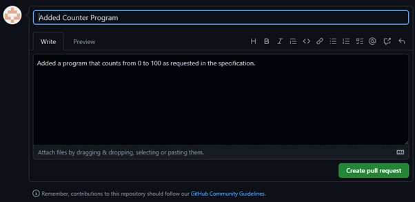

Now we have created our branch the next step is to complete a merge back into our project. To do this we must first make some changes to our branch.
Create a program inside of your local GitHub repository that counts from 0 to 100 and commit that repository to your branch.
Now we have completed some code in our program that we know works we are free to merge that back into our master branch. To do this we must first create a pull request.
To do this from inside GitHub desktop go back into the branches window by clicking on the “Current branch” button at the top of the screen.
When the branch management window opens change the selection at the top of the screen from “branches” to “pull requests” by clicking on the appropriate button.
From inside the “Pull Requests” window you should then click the “Create A Pull Request” option which will then redirect you to the GitHub website.
The pull request window will be displayed which contains a lot of information about the branch that we are currently attempting to merge.
The first thing you will notice is that the branch we are currently working on can be automatically merged, as shown by the prompt at the top of the page.
The reason for this is that we are only adding to our repository, we haven’t changed or deleted anything that could stop our project from working based on something that someone else is working on. (But more on that later).
Underneath you will notice a Name and Description that will accompany your pull request. If you added these when you pushed to your branch (which you should!) these values will be populated for you.
As when pushing it is vital that these fields are easy to understand and make it clear what is present within the branch, as someone else may be checking the code that is being merged and may need some clear information.
Do not create your pull request yet! First scroll down and you will be able to see all the changes that are being made to the repository. You will notice that these items look very similar to the GitHub desktop interface when are a pushing changes to our project, with items that are highlighted in green representing items that have been added to the repository.
When you have finished looking through your changes scroll back to the top of the screen and press the “create pull request” button. This will create a Pull Request that tells GitHub you wish to merge this project into your main branch.
You will then be relocated to the Pull Requests window which shows information about the request you have just made and gives you the ability to add it to your project.
As mentioned previously as this file makes no changes that clash with the existing project it can be merged automatically, and GitHub will remind us of this here.

If you are happy with the outcome of this Pull Request, then you can click the “Merge Pull Request” button.
The button will then change to a confirmation to ensure that you wish to make this decision, click the “Confirm merge” button to commit your branch to the main repository.
When this has been completed the UI will change to purple to show that a branch has been merged.

If this is the case then the branch has been merged, and you are now safe to press the “Delete branch” button to remove the branch from your project.
It is then good practice to write a comment underneath showing that you have merged and closed the branch.
When all is completed, your screen should look like this, showing a timeline of the branch being added, merged and then deleted.
When this has been completed navigate back to the main page of your repository, you should be able to see that the changes from your branch have been added.
You’ve just merged your first branch – well done! However, what happens if we make some changes to our program?
As our program has now changed within the main branch, we need to update our program to ensure that our local version is the same as the one on GitHub.
To do this within GitHub desktop we first have to changer back to the main branch and press the “Fetch Origin” button which will check the main branch to see if any changes have been made.
GitHub desktop should then find some changes and let you know they don’t exist on your machine, to get access to these changes press the “Pull Origin” button which will have changed from “Get Origin” this will download the changes and make changes to them on your machine so that you have the latest version of the project.
Now we have access to the latest version of the program we need to create a branch to make changes to it: